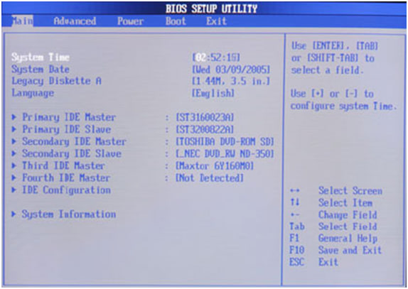

Main – в этом пункте объединены опции, отвечающие за установку системной даты и времени, настройки дисковых накопителей, настройку клавиатуры, параметры выдачи сообщений о POST-ошибках, задание пароля пользователя и супервизора;
Advanced – данный пункт содержит опции, отвечающие за настройку процессора, кэширования памяти, задание частоты системной шины, параметры портов, распределение системных ресурсов между устройствами компьютера и т. д.;
Power – в этом пункте располагаются опции, задающие режим энергопотребления компьютера, отвечающие за мониторинг работы компьютера, а также опции, указывающие, когда следует включать или выключать компьютер;
Boot – в данном пункте собраны опции, задающие параметры загрузки компьютера – с какого устройства надо пытаться первым загрузить и т.п.;
Exit – в этом пункте находятся опции выхода из BIOS Setup (с сохранением произведенных изменений или без), а также опции сброса произведенных изменений и установки заводских значений.

После выбора нужного пункта перед вами раскроется список содержащихся в нем опций, значения которых вы сможете отредактировать.